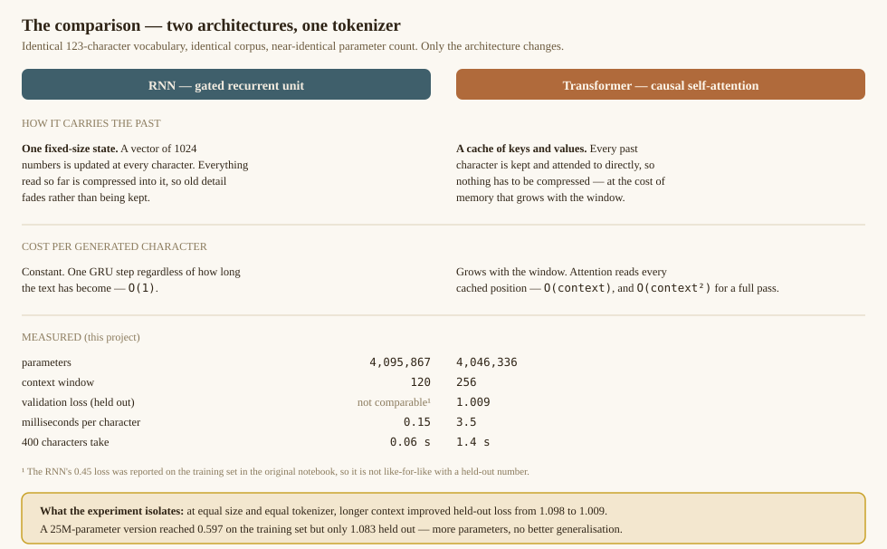
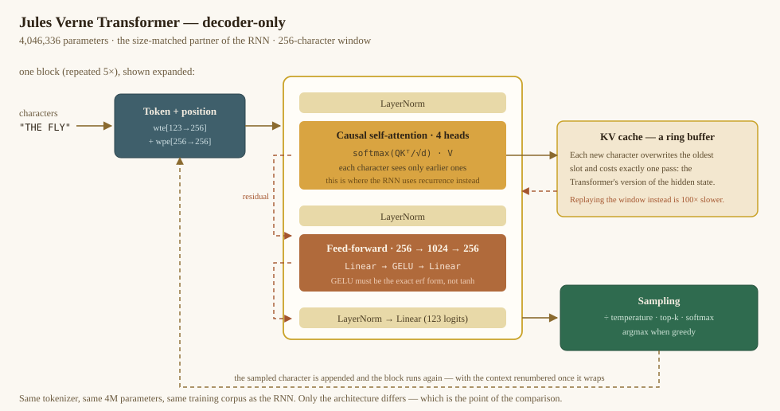
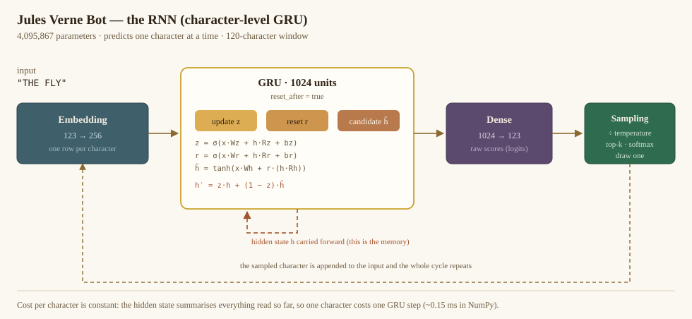

Two character-level models trained on the Extraordinary Journeys — a recurrent network and a Transformer — writing side by side, in your browser.
The RNN loads first so the page is usable immediately; the Transformer is fetched in the background. Both are 8 MB of 16-bit weights.
Press Enter to generate. The model writes one character at a time, so it continues your text rather than answering it.
Divides the logits before sampling. Low values pick the safest next character; high values flatten the distribution and invite chaos.
The novels are hard-wrapped and the models reproduce those line breaks mid-sentence. Switch this off to see the raw character stream.
Reproducible within the page. The browser uses its own generator, so a seed does not reproduce the notebook's exact characters.
The same seed and temperature through each model, so the difference you see is the architecture.

| Run | Parameters | Context | Val loss | ms / char |
|---|---|---|---|---|
| RNN · GRU 1024 | 4,095,867 | 120 | n/a | 0.15 |
| Transformer · ctx 120 | 4,011,520 | 120 | 1.098 | 3.5 |
| Transformer · ctx 256 | 4,046,336 | 256 | 1.009 | 3.5 |
| Transformer · large | 25,414,144 | 256 | 1.083 | 29.2 |
At equal size, going from a 120- to a 256-character window improved held-out loss from 1.098 to 1.009. The 25M model drove its training loss to 0.597 but only reached 1.083 held out — more parameters did not buy better generalisation. The RNN's 0.45 was a training-set figure in the original notebook, so it is not comparable.

